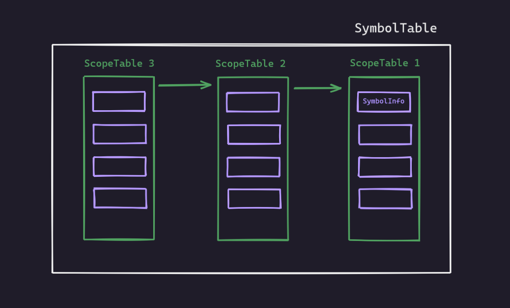

Yet Another C Compiler
This is a write-up and a pseudo tutorial written while making this C Compiler. You can follow along and write a compiler of your own. Here I design a compiler for a subset of C language.
If you are here for the code and submit a copy-pasta (you know who you are and why), just want to let you know that the hall of shame will not have mercy upon you :)
You can find related code down here -

Part 1 : Creating a Symbol Table
The first part needed to make a Compiler is a Symbol Table. A Symbol Table is a data structure maintained by compilers in order to store information about the occurrence of various entities such as identifiers, objects, function names etc. Information of different entities may include type, value, scope etc.
At the starting phase of constructing a compiler, we will construct
a Symbol Table which maintains a list of Hash Tables(Scope Tables) where each hash table contains information of symbols encountered in a scope of the source program . Each Scope Table will have Symbol Info (which will store the information) in it’s buckets.
Here is an overview
Now straight to code . I am showing the declarations here . The full implementation can be found in the code directory.
SymbolInfo
1 |
|
ScopeTable
1 |
|
SymbolTable
1 |
|
Part 2 : Lexical Analysis
Lexical analysis is the process of scanning the source program as a sequence of characters and converting them into sequences of tokens. A program that performs this task is called a lexical analyzer or a lexer or a scanner.
Here we will use the tool flex to do the lexical analysis. Regex is written to do the lexical analysis with flex.
Here is a basic structure of a lex file
1 | %{ |
Regular Expression is a very powerful tool which we will use in this section to identify the tokens. To check what can be done using regular expression in flex, check this for the rules available in flex. You can also use regexr.com to test if your regex performs exactly how you want it to be.
flex definition
This is the required syntax for definition :
1 | definition_name definition |
So, we can define things like this :
1 | WHITESPACE [ \t\f\r\v]+ |
flex rule
The part that is currently matched can be found in the string yytext.
We can write rules using the definitions already defined
1 | {LETTER}{ALNUM}* { |
or we can completely use new ones
1 | "<"|"<="|">"|">="|"=="|"!=" { |
flex states
Sometimes it is easy to handle rules for different things separately. Like our life will be much easier if we handle things like char string or comment separately.
To do this we can enter a state by using BEGIN STATE_NAME and exit using BEGIN INITIAL.
flex errors
We can also write regex to identify common errors like “Too many decimal points” , “Ill formed number” or “Invalid ID” etc.
For example a regex for “Too many decimal points” can be something like this
1 | {DIGIT}*(\.{DIGIT}+)\.[0-9\.Ee+-]*(\.)* |
Part 3 : Parser(Syntax Analysis) & Semantic Analysis
The parser obtains a string of tokens from the lexical analyzer and verifies that the string of token names can be generated by the grammar for the source language. The parser should also report any syntax errors in an intelligible fashion and recover from commonly occurring errors to continue processing the remainder of the program.
To make parser for grammar , we will use the tool bison. This greatly reduces our work .
Here is a basic structure of a bison file
1 | %{ |
User Code
Codes written in this section is directly copied in the resulting .c file (y.tab.c). Here we include our previously written SymbolInfo ScopeTable and SymbolTable header files. We can also include custom libraries, constants and so on. Most includes and function prototype declarations happen at the top (user code section 1) while their actual definition happens at the bottom (user code section 2).
Stack
Using YYSTYPE
We can hardcode a specific type for the terminals and non-terminals by defining YYSTYPE.
1 |
and in the lex file, we can write something like this for the tokens
1 | {integer} { |
Using union
Using union we can specify types for the terminals(token) and non-terminals(type) . We have to tell bison the type of that particular token / type by declaring it inside a special union like this :
1 | %union{ |
This union tells bison that when we use a token / type that is accompanied by symbol_info then we can use its value like SymbolInfo*. On the other hand if its accompanied by helper then that value will be treated as aHelper* instead.
It has to be noted that being a union and not a struct it also means the values use shared memory and not separate segments as opposed to struct fields. We can have as many different tags as we want inside the union and both tokens and types can have the same tag.
Token
Terminals are called token in Bison. The tokens must be first declared in the parser. Because the tokens are generated in the y.tab.h file, then used in the flex file scanner.l. Token declarations must be inside bison’s declaration section. We can use YYSTYPE or union to define token types.
Using YYSTYPE
1 | %token ID ADDOP MULOP RELOP LOGICOP |
Using union
1 | %token < symbol_info > ID ADDOP MULOP RELOP LOGICOP |
Type
Non-terminals are called type in Bison. These non-terminals/state can have a return value, much like tokens. We can use YYSTYPE or union to define types in the same way.
Using YYSTYPE
1 | %type start program unit variable var_declaration type_specifier |
Using union
1 | %type < helper > start program unit variable var_declaration type_specifier |
Grammar
In bison we create a grammar which syntactically evaluates if the tokens that flex generated are emitted in a syntactically correct order. In order to do that we will have to take a good look at our language specification and break it down to building blocks that we then have to express using bison rules.
Grammar rules in general have the following syntax:
1 | rule_name: |
A rule starts by typing its unique name then a colon (:) followed by a number of cases which are separated
with a dash |; the last rule must be followed by a semicolon (;). Also rules don’t have to be separated
by lines so this would be perfectly legal as well:
1 | rule_name: caseA | caseB | ... | caseN; |
It is also possible to write action codes:
1 | func_declaration : type_specifier ID LPAREN parameter_list RPAREN { /** can write code here : known as action code **/ } SEMICOLON |
The grammar we will use here is the following :
1 | start : program |
Accessing token and types
Flex returns tokens to parser. Parser tries to match grammar rules by shifting one by one and reduced when a rule is matched. Token and types can be accessed using $1, $2, … $n where n is the nth item of the rule. Each rule can return a value which is $$
1 | arguments : arguments COMMA logic_expression |
Precedence
There are 4 types of precedence types in bison , 3 of which declare both precedence as well as associativity while the last (as its name suggests) declares only precedence. The complete list is the following:
%left: Indicates that this operator has left associativity (e.g. (a + b) + c is preferred)- syntax is:
%left symbols
- syntax is:
%right: Indicates that this operator has right associativity (e.g. a + (b + c) is preferred)- syntax is:
%right symbols
- syntax is:
%nonassoc: Indicates that this operator cannot be seen in sequence and is considered a syntax error
if that’s encountered (e.g. a + b + c would throw an error).- syntax is:
%nonassoc symbols
- syntax is:
%precedence: Indicates just precedence not associativity.
Shift/Reduce Conflict
This type of conflict happens when bison does not know which operation to perform, shift or reduce. The given grammar has one example of this type of conflict :
1 | statement : IF LPAREN expression RPAREN statement |
The example of this would be :
1 | if(x<2) if(x>0) y = 2; else z = 5; |
Because of the ambiguity, the parser doesn’t know if he needs associate the else statement with the most recent if or not. That is it does not know if it already needs to reduce or continue to process the token ELSE
We can solve this using 2 ways:
- rewrite the grammar
- assign precedence to token
The first part can be a tough job. Bison gives the opportunity to do the 2nd one.
We can solve this shift/reduce conflict by adding the following in the declaration section:
1 | %nonassoc LOWER_THAN_ELSE |
and change the grammar rule to this:
1 | statement : IF LPAREN expression RPAREN statement %prec LOWER_THAN_ELSE |
Here, we are using a dummy token LOWER_THAN_ELSE and putting it before ELSE, thus making ELSE the higher priority one.
Freeing Memory : Part 1
In C or C++, if you dynamically allocate memory, it is your job to free it yourself. Bison has no reasonable obligation to clean-up your mess :)
Unfortunately most people somehow think that the bison (or flex) will take care of memory they allocate in the parser, but unfortunately that’s not the case.
Let’s see an example to demonstrate this. Here is an example rule from the grammar :
1 | unary_expression: ADDOP unary_expression { |
But this implementation is not correct. $1 represents a SymbolInfo pointer which was dynamically allocated in the lex file :
1 | "+"|"-" { |
and for $2 , it was also dynamically allocated in the parser in this rule :
1 | unary_expression: factor { |
As mentioned before, if something is dynamically allocated, it’s your job to clean that up. So, we need to free $1 and $2 when we are done with them.
So, the correct way to write this would be :
1 | unary_expression: ADDOP unary_expression { |
Caution
But, you need to be careful when you are freeing memory. Imagine inside a rule you have done something like this :
1 | $$ = $1; |
Here both are pointers. So, what you are essentially doing is making $$ point to $1 and freeing $1 (so, freeing $$). Next time you are trying to access $$, you will get core dumped.
Its also handy to write a cleanup function like the following so that we don’t accidentally free the ones that have already been freed.
1 | void eraseMemory_S(SymbolInfo* s) // erase memory of SymbolInfo pointer |
Part 4 : Error Recovery
During the shift reduce parser phase things can_ and _will_ go wrong. This can happen when the parser is unable to match with any of the rules. Under default conditions our parser will terminate after seeing the first error, these are called fail-fast parsers, but nobody actually wants them … (except maybe lazy students). This means that if our input has more than one mistake we would only detect the first and exit! This process would get quite tedious as _repeated compilations would be required in order to detect and fix all errors instead of reporting all errors in our source at the first parse.
Thankfully bison has error recovery capabilities! They are also quite simple to define and explain but require a lot of skill, practice and a hellish insight in order to be used correctly. Otherwise you will add one rule to recover error and get 30-40 shift reduce errors :p So you have to have proper insight about your grammar and handle errors that way.
One more thing, there is no limit to handling cases. Your user can do mistakes you can never think of. So, it boils down to how many cases you can think of and correct them by adding grammar rules.
For example, your user has written code like this :
1 | int x-y,z; |
probably the user wanted to give a COMMA but added a MINUS instead. If you try to run this with your parser, your parser will immediately stop after encountering this error. Because your parser can’t associate to any rule of this type. What you can do is handle the error using the bison error token. It is already defined in bison, you don’t have to define it.
We can add a rule to recover from this error :
1 | declaration_list: declaration_list COMMA ID { |
The previous lookahead token is reanalyzed immediately after an error. If this is unacceptable, then the macro yyclearin may be used to clear this token. Write the statement yyclearin; in the error rule’s action.
Additionally, after encountering an error it’s likely that this fact will then create much more consecutive errors; to avoid this console spam bison suppresses error messages until 3 consecutive tokens have been parsed and shifted successfully. If you don’t like (or want) this behavior by default you can put yyerrok; inside the error rule.
1 | declaration_list: declaration_list COMMA ID { |
Just like this, you have to thoroughly think of the corner cases that can happen and handle accordingly.
Freeing Memory : Part 2
So far we have only handled only one part of the memory de-allocation process. As we have seen in the error recovery process, things can go wrong during parsing and we have to account for that. Thankfully bison has the ability to clean its own stuff when something does go wrong, but what about our dynamically allocated symbols. Thankfully, bison has a facility that can help us free-up own resources by calling a destructor on each of the discarded symbols, but what does bison consider as a discarded symbol? The following list is mostly an extract from bison‘s manual which defines that bison considers as discarded symbols :
Valid discarded symbols are the symbols that fall into at least one of the following categories:
- stacked symbols popped during the first phase of error recovery
- incoming terminals during the second phase of error recovery
- the current lookahead and the entire stack (except the current right-hand side symbols) in the case the parser is fail-fast
- the current lookahead and the entire stack (including the current right-hand side symbols) when the
C++parser catches an exception inparse - the start symbol when the parser succeeds
Here’s how we can do that in our grammar :
1 | %union{ |
Notice the tag-less destructor, which is called on every symbol that is present_. This might raise the question on how to select which destructor to call since there might be more than one. Should bison detects that there is a tag-specific destructor for a discarded symbol _it will call that and ignore the more generic one, so in case of discarding a symbol that has a semantic value of <symbol_info> then only the destructor for <symbol_info> will be called.
Part 5 : Intermediate Code Generator
For the final piece of this puzzle, we need to write an intermediate code generator on top of our bison code , which will generate 8086 assembly code. We can simulate that using emu8086 simulator
To do that we can add an extra attribute in out struct Helper and add the necessary code for the corresponding grammar. The code is then propagated as usual with the grammar.
Declaring variable can be done in 2 ways. We can put all the variables in the data segment or we can use stack for that. The latter is preferred.
We can also optimize our code in the following scenario
1 | mov ax, a |
The second line is redundant and we can simply write
1 | mov ax, a |
Some other optimizations can also be done. For example
1 | x = 5; |
we can ignore the code generated for the first line as that value is never used.
Another optimization can also be made for temporary variables. We can reallocate the temporary variables and ensure efficient use.
Final Words
If you are this far and done with the coding by yourself, just to let you know that you should be very proud of yourself. When I successfully run a recursion after the Intermediate Cdde Generation part, it was the most wholesome moment of my CS life :) Hope it was a wholesome journey for you too :)
Md. Zarif Ul Alam
CSE , BUET